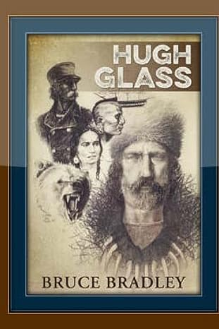

Hugh Glass: The Man Who Wouldn’t Die
Pirates. Pawnee. A grizzly. A 200-mile crawl. The survival story that still punches through time.
Act I: Baptism by Gunpowder
Born around 1783 in Pennsylvania, Hugh Glass strayed further than most men dared. By the 1810s he had fallen into the grip of Jean Lafitte’s pirates in the Gulf of Mexico, a floating kingdom where a man’s life was worth less than the powder in a pistol.
When Glass tried to escape, the pirates decided to make an example of him. They dragged him before the crew, pressed a pistol to his temple, and pulled the trigger. Click. Misfire. Again. Click. A third and fourth time, the hammer fell on silence. The deck grew restless, bad omens ran deep in pirate blood. To prove the weapon wasn’t bewitched, the man aimed at the sea and squeezed once more. This time the pistol boomed, smoke rolling over the waves. Cursing, the drunken pirate drew his cutlass to finish the job, but Glass slipped into the shadows, vanishing until night gave him cover.
Soon after, their vessel grounded out on the Gulf Coast. The men camped, focused on survival and plotting their next push back to sea. Glass, ragged and desperate, kept to the treeline. He didn’t join them, didn’t risk exposure. He scavenged quietly, living on turtle eggs, shellfish, and seabirds caught with crude clubs. He drank rainwater when the sky allowed and stayed out of sight, a ghost at the edge of their camp.
Among them was another fugitive, his details blurred by history. They weren’t companions; they hardly acknowledged each other. Yet when that man finally left the island to seek his way back to sea, he left something behind for Glass: a knife.
For Glass, it was salvation. With steel in hand he could carve shelters, strip hides, build traps, and craft tools instead of clawing at survival barehanded. He remained on the island alone, honing the quiet stubbornness that would one day make him infamous. When a passing ship finally pulled him off the shore, Glass was scarred, starved, and half-dead—but alive. Already baptized in survival; already marked by the lesson that would define him: grit isn’t about glory. It’s about staying alive when the world has written you off.
Act II: Captive, Then Brother
Westward wanderings pushed Glass into another crucible: capture by the Pawnee. For most frontiersmen, that ended in fire and screams. The Pawnee had their reasons—revenge, ritual, or just plain survival. But Glass’s story bent differently: he wasn’t tortured, he was spared. Why? Historians argue. He may have been adopted to replace a fallen warrior, or perhaps the tribe simply saw something unbreakable in him, a stubbornness that even pirates and starvation hadn’t crushed.
Glass lived with the Pawnee for years, long enough to marry into the tribe and absorb their survival knowledge until it lived in his hands. He learned to track by bent grass and broken spider webs, to move silently across open country where a wrong step could mean death. He learned to hunt with snares and patience instead of the thunder of a musket, and to treat weather like a living enemy—watching the sky, the wind, the birds, and knowing when to move or hunker down. From them, he also learned respect: for the land, for life, for the knowledge that the careless are erased without ceremony.
The pirate turned castaway became something else entirely: a frontiersman with two worlds in his blood. These years would become his greatest weapon—when the bear came, when betrayal buried him, when death circled close, it was Pawnee skills that whispered in his ear: crawl, keep moving, don’t stop breathing until you absolutely have to.
Act VIII: The Final Ambush
Glass returned to the only life he knew: trapping. He never settled down, never planted crops, never chose the safer path. For nearly another decade he lived like a ghost across the frontier—dodging arrows, outlasting winters that froze men solid, and chasing pelts across country so harsh it seemed designed to kill intruders. He carried scars inside and out, a body stitched together by stubbornness and grit. Every step was survival, every season another gamble.
But even the hardest men run out of road. In 1833, along the Yellowstone River, Glass’s luck finally cracked. He and two companions were ambushed by an Arikara war party. These weren’t startled villagers or lone warriors—they were seasoned fighters who knew the land better than any trapper. The attack was swift and merciless. Arrows blackened the sky, spears and musket fire cutting off any escape. Glass fought, but the sheer numbers and precision of the warriors drowned even his legendary resilience. The man who had survived pirates, starvation, betrayal, and the claws of a grizzly bear was finally overwhelmed. It didn’t take disease or old age to bring him down—it took a war party.
Some say that’s the only fitting end Hugh Glass could have had. Death couldn’t creep up on him in bed—it had to meet him head-on in battle, with arrows in the air and the ground running red. His body fell where his life had always been lived: at the edge of survival.
Act IV: The Bear
Summer, 1823. Near the Grand River, Hugh Glass walked into his personal apocalypse. While scouting ahead, he stumbled upon a mother grizzly with cubs. Nothing on earth is more dangerous than a mother defending her young. Glass fired his rifle once and hit her, but it was like poking a thundercloud with a stick. She came anyway.
In seconds, she had him down. Her claws shredded his scalp. Her teeth snapped his leg like dry wood. She ripped his throat so deep that later, men swore you could see daylight through the wound. She clawed his back and ribs until bone showed through. By the time his companions arrived and killed the bear, Glass looked less like a man and more like a pile of meat that stubbornly refused to stop twitching.
The wilderness had made its point: out here, you don’t get to pick your fights. Sometimes the fight finds you, and if you’re lucky, you get to die quick. Glass wasn’t lucky. He was alive.
Act V: Buried Alive
The trappers did what they could—they sewed his scalp back on, patched his wounds, and carried him for miles. But he slowed them down, and out here, slow meant dead. Captain Henry ordered two men, John Fitzgerald and a teenage Jim Bridger, to stay behind, watch over Glass until he expired, then give him a proper burial.
They didn’t wait. Convinced he’d never survive, they robbed him of his rifle, knife, and gear—everything a man needed to live. Then they scraped a shallow grave, rolled him in, and left him for dead. Glass was now weaponless, alone, and half-buried. Betrayal is one thing. Being buried alive is another. He had both.
Act VI: The Crawl
Most men would have died right there, but Hugh Glass refused death’s timetable. He clawed out of his grave and began to crawl. For six weeks, he dragged himself more than 200 miles to Fort Kiowa. His throat was half gone, his leg shattered, his body leaking from every seam.
He ate berries, roots, and raw snakes. He drank swamp water and prayed it didn’t kill him faster. Once, he stumbled across wolves tearing apart a buffalo carcass. With nothing but rage and a stick, he drove them off and gorged on the rotting meat. Another time, he splinted his own leg with sticks and rawhide. He packed mud into his wounds to stave off infection. Every mile was another insult to death. Most men beg for mercy. Glass bargained for another inch, another sunrise.
Field note: Today we get annoyed when a water filter clogs. Glass drank puddles and thanked the filth for not killing him. Perspective, folks.
Act VII: Revenge (Sort Of)
When he finally limped into Fort Kiowa, he was a stitched-together ghost. But rest wasn’t on his mind. Revenge was. Fitzgerald and Bridger had robbed him, abandoned him, and buried him. Now he wanted blood.
He tracked Bridger first—found him young, terrified, and guilty. Glass looked into his eyes and saw a boy, not a killer. He spared him. Fitzgerald was trickier. The man had joined the Army and was hiding behind federal protection. Killing him would have earned Glass a hangman’s noose. So Glass let him live, but not without branding him a coward. Sometimes the worst punishment isn’t death. It’s being forced to live with what you did—and knowing the world knows too.
It wasn’t the ending he wanted, but it was an ending. And maybe, for a man like Glass, outliving your betrayers was the sharpest revenge of all.
Act VIII: The Final Ambush
Glass returned to the only life he knew: trapping. He didn’t retire, didn’t soften, didn’t fade into farming. He went back to rivers, mountains, and the trade that ate men alive. Nearly a decade more he lasted, dodging arrows, enduring winters, and chasing pelts across hostile ground.
But in 1833, his luck finally cracked. Along the Yellowstone, an Arikara war party ambushed him and two companions. Glass fought, but arrows flew thick, and numbers drowned even his grit. The man who had outlasted pirates, starvation, betrayal, and a grizzly bear was finally overwhelmed. It took skilled warriors and overwhelming force to kill him. A fitting end for a man who had survived everything else.
Why Hugh Glass Still Matters
Glass wasn’t a saint. He wasn’t polite or polished. He was a pirate, a castaway, a captive, a husband, a frontiersman, a man chewed up by the wild and spat back out again and again. But his story drives one truth home: when death is certain, grit is the only weapon left.
Glass fought wolves for meat. You can unwrap calories that actually taste good.
Want the full crawl-through-hell story? This book puts you shoulder-to-shoulder with him.
Disclosure: some links are affiliate links. If you buy through them, Grit Gear HQ may earn a commission at no extra cost to you.
Final Word
From a pirate’s misfiring pistol to a grizzly’s claws, Hugh Glass should’ve died a dozen times. He didn’t. He crawled when others quit. He forgave when rage would have consumed him. And he kept pushing until it took a war party to bring him down.
That’s why his story still matters: survival doesn’t belong to the strongest or the smartest. It belongs to the stubborn.
One day your own “bear” will block the trail. Crawl, don’t quit.